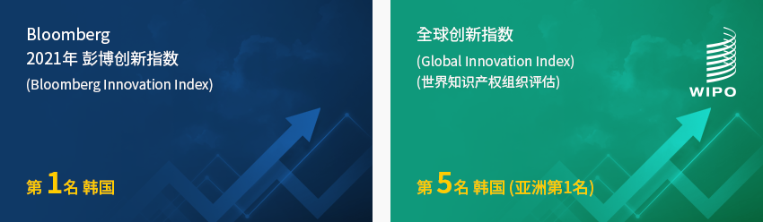
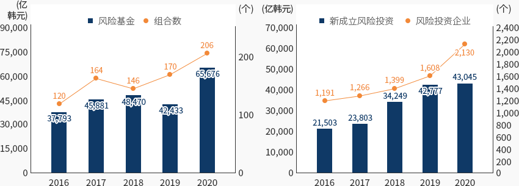
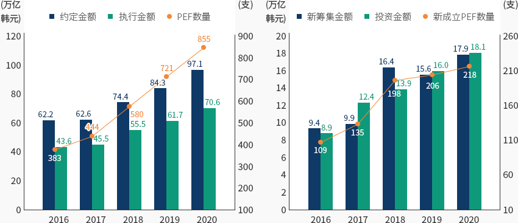
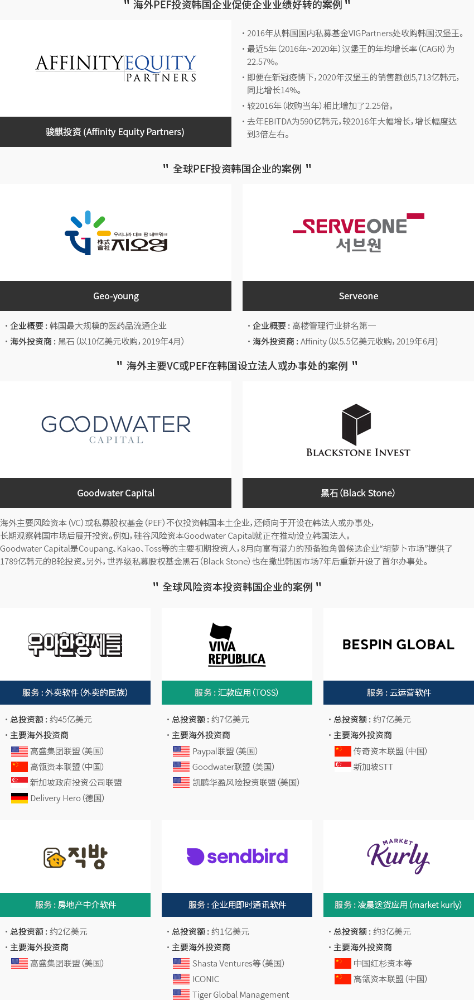

金融
- Home
- Why KOREA
- 产业
- 金融
-
韩国的创新生态系统 跃升魅力投资目的地 关闭内容韩国的创新生态系统 跃升魅力投资目的地近年来风险资本筹集和投资连续刷新纪录。尽管2020年遭遇新冠肺炎危机，风险投资依然十分活跃。
民间致力于创造适当的投资收益，政府则坚持将风险企业视为韩国经济发展和带动就业的动力，
二者一拍即合，使得韩国风险投资生态系统持续发展，日趋成熟。韩国的创新生态系统建设完备，堪称极具魅力的投资目的地。特别是在各大创新评估中，韩国连续多年名列前茅，
如2021年彭博创新指数（Bloomberg Innovation Index）第一名、世界知识产权组织（WIPO）全球创新指数（Global Innovation Index）第五名等。- 彭博创新指数(Bloomberg Innovation Index)- 第一名 韩国
- 全球创新指数(Global Innovation Index)(世界知识产权组织评估) - 第五名 韩国（亚洲第一名）
 最近，并购型（Buyout）私募股权基金（PEF）也刷新了PEF成立数量和投资额的记录，实现稳步增长。
最近，并购型（Buyout）私募股权基金（PEF）也刷新了PEF成立数量和投资额的记录，实现稳步增长。
私募股权基金是企业并购领域的主要“玩家”，如提高企业价值后上市、同业公司合并后出售等，正在增强自身影响力。韩国政府不断推出发展风险企业和风险资本的政策性支持，还在放松PEDF监管等制度层面持续优化完善。2021年8月，韩国政府公布“跃升全球第四大风险强国”政策，目前风险资本和PEF投资环境持续得到改善，
如从2021年10月开始调整PEF制度、放松PEF资产运用监管等。 -
风险资本筹集和风险投资 持续刷新记录 打开内容风险资本筹集和风险投资 持续刷新记录尽管2020年遭遇新冠肺炎危机，但风险基金的成立和风险资本投资依然持续增长，并刷新了历史记录。
2020年新成立风险基金规模达到65676亿韩元，同比增长约54.8%，而新成立组合有206个，创下历史新高。
2020年新成立风险基金一举刷新了此前2018年最高纪录——48470亿韩元，同时首次突破了6万亿韩元大关。2020年风险企业投资增速较去年有所回落，但仍然达到43045亿韩元，再次刷新历史最高记录。
2020年风险投资同比增长0.6%，增速较2019年的24.9%有所放缓，但投资笔数（4231笔）
和被投资企业数量（2130家）也分别首次突破4000笔和2000家，双双达到历史最高值。风险基金成立实绩 分类, 年度 分类 2016 2017 2018 2019 2020 风险基金 37,793 45,881 48,470 42,433 65,676 组合数 120 164 146 170 206 风险基金成立实绩 分类, 年度 分类 2016 2017 2018 2019 2020 新成立风险投资 21,503 23,803 34,249 42,777 43,045 风险投资企业 1,191 1,266 1,399 1,608 2,130
※ 资料来源：中小风险企业部从风险投资涉及行业来看，因新冠肺炎危机而备受关注的生物科技及医疗、信息通信技术（ICT）领域、
材料-零部件-设备相关行业（电气-机械-设备、化工和材料、ICT制造）等6大行业引领2020年风险投资增长。
反之，新冠肺炎余波导致相关产业整体受到影响，流通与服务、影像-演出-唱片行业的投资较2019年有所下降。"2019年与2020年各行业风险投资对比"(单位: 亿韩元, %)2019年与2020年各行业风险投资对比 增加行业, 减少行业, 增减率(%), 年度 增加行业 ‘19年 ‘20年 增减率(%) 减少行业 ‘19年 ‘20年 增减率(%) 生物科技、医疗 11,033 11,970 8.5 流通及服务 8,145 7,242 -11.1 电气-机械-设备 2,036 2,738 34.5 化工、材料 1,211 1,765 45.7 影像-演出-唱片 3,703 2,902 -21.6 ICT制造 1,493 1,869 25.2 ICT服务 10,446 10,764 3.0 其他 3,518 2,546 -27.6 游戏 1,192 1,249 4.8 ※ 资料来源：中小风险企业部(单位 : 十亿美元, 家)创业投资公司（投资组合）情况及投资业绩 分类, 年度(2010 ~ 2018年) 分类 创业投资公司 投资组合 组合数 成立金额 投资 新投资金额 企业数 ※ 资料来源：韩国风险资本协会
※ 注：投资组合包括创业投资组合和韩国风险投资组合
※ 组合以每年新成立组合为对象进行统计，可根据计算时点会有所不同。 -
并购型PEF成立 与投资持续增长 打开内容并购型PEF成立 与投资持续增长另一方面，截至2020年末，新成立的并购型（Buyout）私募股权基金（PEF）数量达到855支，同比增加134支。
投资者的PEF投资约定规模为97.1万亿韩元，较去年的84.3万亿韩元增长15.2%。
PEF投资执行规模为70.6万亿韩元，较去年的61.7万亿韩元增长12.6%。2020年新成立PEF数量共计218支，较去年（206支）增加12支。
2020年PEF新筹集资金（新成立PEF的约定金额）达17.9万亿韩元，较去年（15.6万亿韩元）增加2.3万亿韩元。
2020年PEF投资执行规模为18.1万亿韩元，较去年（16万亿韩元）增加2.1万亿韩元。2020年国内外565家公司获得PEF投资，其中韩国本土企业有488家（占比86.4%），说明相当偏向于投资韩国本土企业。
投资国内的金额为12.6万亿韩元，投资海外的金额为5.5万亿韩元。"PEF总数、约定金额、执行金额与新成立PEF及其筹集金额、投资金额走势"PEF总数、约定金额、执行金额 分类, 年度 分类 2016 2017 2018 2019 2020 约定金额 62.2 62.6 74.4 84.3 97.1 执行金额 43.6 45.5 55.4 61.7 70.6 PEF 数量 383 444 580 721 855 与新成立PEF及其筹集金额、投资金额走势 分类, 年度 分类 2016 2017 2018 2019 2020 新筹集金额 9.4 9.9 16.4 15.6 17.9 投资金额 8.9 12.4 13.9 16.0 18.1 新成立PEF数量 109 135 198 206 218
※ 资料来源：金融监督院 -
第四次工业革命时代将至 市场导向型企业重组的必要性增大 打开内容第四次工业革命时代将至 市场导向型企业重组的必要性增大最近几年间，韩国风险资本规模屡创新高，被誉为"第二次风险好景期"，市场活力不断增强。
尤其，伴随第四次工业革命相关新型产业的崛起，产业结构不断重组，为企业提供新的发展机遇。
不仅如此，韩国政府还致力于将第四次工业革命相关风险企业培育成韩国经济的主力军，且相关政策意志也十分明确。并购型私募股权基金（Buyout PEF）也呈现持续增长局面，如果今后进入长期经济萧条期，对私募股权基金而言，
反而会带来更多的投资机会。特别是与过去相比，韩国企业主动推动结构重组的倾向更强，
因此遇到经济萧条期，优良企业会增多，而私募股权基金的收益性也将得到大幅改善。 -
海外风险资本（VC） 活跃投资韩国风险企业 打开内容海外风险资本（VC） 活跃投资韩国风险企业最近，全球风险投资机构（私募股权基金（PEF）、风险资本（VC）、加速器（Accelerator））
对韩国企业的投资相当活跃。今后，随着成功案例越来越多，风险生态系统会更为成熟，市场活力也将进一步提高。
近期风险企业获得全球风险基金投资的案例具体如下全球风险基金招商引资的主要事例 企业名称, 主要行情 企业名称 主要行情 
Ingradient是一家医疗人工智能专业数据标注企业，于2021年7月从以色列首个风险资本“Yozma Group”获得Vision Creator 14亿韩元的Pre-A轮投资。 Ingradient开发出医疗AI数据标注解决方案MediLabel，投资机构高度评价了其技术实力和未来愿景。 
Yanolja是韩国第一大旅行和休闲平台企业，2021年7月从全球第一大风险投资基金“愿景基金”（SoftBank's Vision Fund）获得17亿美元（约合19400亿韩元）投资。Yanolja发展了基于云计算的客房预订管理系统，从单纯的住宿预订企业转型为IT服务企业，正在实现收益结构多元化。 
Taleverse是一家开发用户参与型故事内容平台的初创企业，2021年10月从新加坡风险资本GarenaVentures获得200万美元（约合23亿韩元）的种子（Seed）投资。Taleverse正在开发一个故事内容平台，以克服现有网络小说和网络漫画的缺点，具备华丽视效和动态动作，且制作费远低于动画片，让人人都能轻松制作。 MarqVision是一家人工智能企业，2021年4月从全球第一大初创企业加速器Y Combinator和韩国本土投资机构BassInvestment、Danal Investment Partners获得36亿韩元投资。MarqVision提供一套人工智能监测假冒商品服务，揭发亚马逊、Coupang、阿里巴巴、淘宝等23个国家的60多个电商网站及各种社交网络频道上流通的假货，并自动进行删除举报。 
BearRobotics是一家机器人初创企业，2020年1月在软银主导下从韩国的乐天加速器、Smilegate、DSC Investment等公司获得了3200万美元（约合371亿韩元）的A轮投资，在众多机器人初创企业中创下最高记录。BearRobotics以无人驾驶技术为基础，开发出机器人Servi，主导着餐饮业市场的服务创新。 海外PEF投资韩国企业促使企业业绩好转的案例 骏麒投资（Affinity Equity Partners）- 2016年从韩国国内私募基金VIGPartners处收购韩国汉堡王
- 最近5年（2016年~2020年）汉堡王的年均增长率（CAGR）为22.57%。
- 即便在新冠疫情下，2020年汉堡王的销售额创5713亿韩元，同比增长14%。
- 较2016年（收购当年）相比增加了2.25倍。
- 去年EBITDA为590亿韩元，较2016年大幅增长，增长幅度达到3倍左右。
全球PEF投资韩国企业的案例-
Geo-young
- 企业概要 : 韩国最大规模的医药品流通企业
- 海外投资商 : 黑石（以10亿美元收购，2019年4月）
-
Serveone
- 企业概要 : 高楼管理行业排名第一
- 海外投资商 : Affinity（以5.5亿美元收购，2019年6月)
海外主要VC或PEF在韩国设立法人或办事处的案例- Goodwater Capital
- Black Stone
全球风险资本投资韩国企业的案例-
服务 : 外卖软件（外卖的民族）
- 总投资额 : 约 45亿美元
- 主要海外投资商 : 高盛集团联盟（美国）, 高瓴资本联盟（中国）, 新加坡政府投资公司联盟, Delivery Hero（德国）
-
服务 : 汇款应用（TOSS）
- 总投资额 : 约 7亿美元
- 主要海外投资商 : Paypal联盟（美国）, Goodwater联盟（美国）, 凯鹏华盈风险投资联盟（美国）
-
服务 : 云运营软件
- 总投资额 : 约 2亿美元
- 主要海外投资商 : 传奇资本联盟（中国）, 新加坡STT
-
服务 : 房地产中介软件
- 总投资额 : 约 2亿美元
- 主要海外投资商 : 高盛集团联盟（美国）
-
服务 : 企业用即时通讯软件
- 总投资额 : 约 1亿美元
- 主要海外投资商 : Shasta Ventures等（美国）, ICONIC, Tiger Global Management
-
服务 : 凌晨送货应用（market kurly）
- 总投资额 : 约 3亿美元
- 主要海外投资商 : 中国红杉资本等, 高瓴资本联盟（中国）
※ 资料来源：朝鲜商务（2018年3月）、IT朝鲜（2019年9月）、mergermarket资料 -
风险投资与风险企业 发展促进政策与PEF制度调整 打开内容风险投资与风险企业 发展促进政策与PEF制度调整2020年2月《风险投资促进法》（以下简称“风险投资法”）出台，同年7月开始实施。
风险投资法整合了分散于多部法律中的风险投资制度，建设具有连贯性的风险投资生态系统，
并放宽了对促进民间风险资本投资和个人天使投资等的监管。例如，
针对发掘有潜力的初创企业并提供初期培育投资的创业企划人（加速器），
只要在专业人才和资本金等方面满足一定条件，就允许其成立风险投资组合（投资基金）。
此外，还放宽了监管限制，如将成立基金的最低出资额从30亿韩元下调到20亿韩元。另外，2021年8月韩国政府公布“跃升为全球第四大风险创业强国的风险完善对策”，坚持落实培育多
种风险企业和促进风险投资的政策。韩国政府表示将推动多项政策倡议，如为使风险企业能广泛发行和运用股票期权而
放宽对发行对象等条件的限制；推动全球风险基金和海外风险资本网络发展壮大，
为风险企业吸引海外投资和进军海外提供支持； 引入硅谷式风险基金治理结构，促进海外资本流入并提高责任性；
新设技术创新并购（M&A）保证，为企业筹集收购资金；通过扩大并购基金规模等方式提供流动性。创业企划人注册及投资金额 年度(2017 ~ 2020年) 2017 2018 2019 2020 创业企划人投资金额(韩元) 16,300,000,000 65,800,000,000 159,600,000,000 225,300,000,000 创业企划人投资金额(美元) 14,414,063.88 59,801,872.22 137,193,549.50 193,669,841.49 创业企划人投资金额(百万美元) 14 60 137 194 ※ 资料来源：中小风险企业部부
※ 资料协助：韩国经济研究院


Invest KOREA
金融/财务项目经理
金奎範
服务产业引进组
T.+82-2-3460-3289